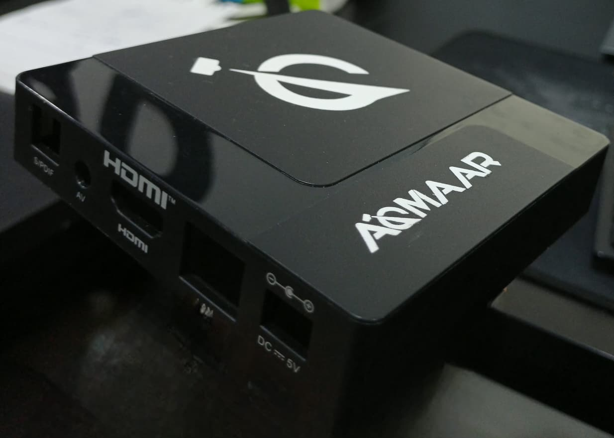

01 / RAG · CUBESATAerospace AI · Graduation project
Autonomous Mission Design
A retrieval-augmented framework for CubeSat mission analysis and preliminary architecture design, connecting engineering knowledge with LLM orchestration.
RAGLangChainPyTorch